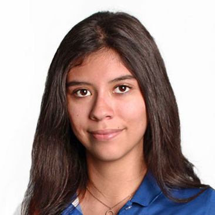
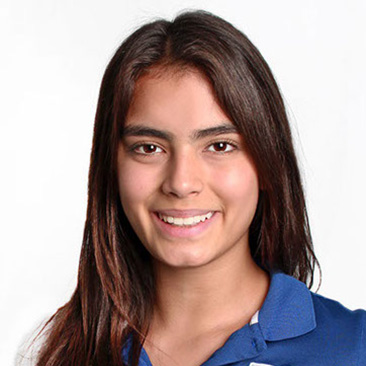
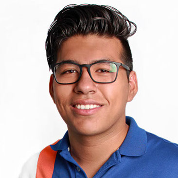
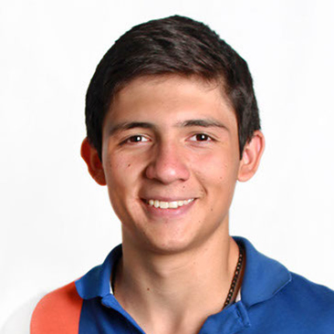
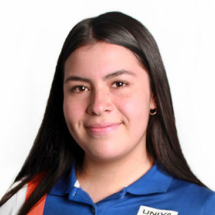
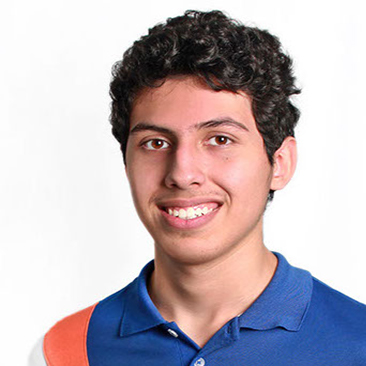
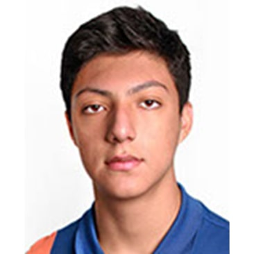

¿Por qué Gastronomía?
Nuestro objetivo es dar a conocer la cultura italiana y los aportes de Leonardo da Vinci a la cocina tomando en cuenta herramientas, recetas, reglas; haciendo que los visitantes vivan la experiencia de probar nuevos sabores.
Logística
Ingresarán grupos de 5 personas, la actividad se divide en dos partes: primero una explicación dónde observarán distintos objetos expuestos en el stand. Lo siguiente es una degustación, donde los cinco participantes probarán una porción de spaghetti y una bebida a su elección, ellos tendrán que adivinar los ingredientes que contiene el spaghetti, el que adivine la mayor cantidad de ingredientes se lleva como premio un postre.
Los Creadores
Itzia Mariana Ramírez Galicia
Elaboración del tema
Ana Sofía Salinas Hernández
Elaboración del tema
Mariana Carolee Williams
Elaboración del tema
Alfonso Sebastián Reynaga Mariscal
Elaboración del tema
Mónica Belén Altamirano Bravo
Andrea Bucio Aceves

Ana Paola Cárdenas Gutiérrez
Jesús Adrián Cisneros Becerra
Itzajana Jeraldin De la Torre García

María Isabel Dorantes Morales
Yara Alexia Xiomara Estrella López
Sofía Aidee González González
Marisol González Melchor

Regina González Salman
Hazel Sofía Hassan Ruiz
Camila Alexandra Jiménez González

Enrique Ledón Gómez
Luis David Jhonas Magaña Vallejo
Oscar Medina Pérez
Ana Paula Mejorada Parra
Natalia Ramírez Pérez

Luis Adrián Rosales Aguilar
Fabián Silva Ruiz
Paola Alejandra Ulloa Hernández

Alan Villanueva Guzmán
Galería
¿Por qué Botánica?
Realizamos un taller que busca crear una unión con la naturaleza y nosotros, en este taller que durara de 25-30 minutos cada turno y se contara con 3 turnos por día, en cada turno 12 personas podrán crear un mini terrario de 20 centímetros con la forma de un dodecaedro.
Logística
Los participantes pasaran por uno de los pilares donde se revisará que estén registrados, a continuación, mientras se va explicando en cada pilar las investigaciones que Leonardo hizo acerca de la botánica se irán dando los materiales(tierra, carbón activado, piedras, suculentas y la estructura). Se llegará a una mesa donde parados procederemos a explicar el armado de su terrario, al finalizarlo se retirarán por el mismo lugar donde entraron y se podrá dar su asistencia dentro del taller.
Los Creadores

Miroslava Estefanía González Trejo
Elaboración del tema
Adriana Leticia Fernández Gómez
Elaboración del tema
María Fernanda González García
Elaboración del tema
Jurgen Arturo Arvizu Venegas
Paola Danae Bañuelos Hernández
Arantza Dalay González Morales
Diego Josué González Rocha
Khrystian Raúl Kirock Gutiérrez Mendoza
Daniela Paola Hernández Godínez
José Antonio Hoz González
Leonel Yeissuam López Ávila
Paola Teresa Navarro Villaseñor
Anitzy Mairym Padilla Barba
Abril Pimienta Serafín
Ever Yahir Quintero Sánchez
Diana Helena Ramos de la Cerda
Ana Elisa Rodríguez Gámez
Melany Fernanda Ruiz Ascencio
Santiago Salcedo Campos
Víctor Fernando Siliceo Montaño
Claudia Torres Herrera
Laura Georgina Treviño Álvarez
Carlos Tadeo Vega Méndez
Omar Bernabé Vera Gómez
Sofía Monserrat Vilar Viramontes
Ana Sofía Zozaya Rangel
Galería
¿Por qué Astronomía?
Nuestro principal objetivo con esta actividad es el asegurarnos de una manera práctica el que los participantes hayan entendido y obtenido el conocimiento que se les ha brindado. Para poderlo cumplir se realizará un rompecabezas de la imagen más simbólica y de mayor importancia en el stand, aquella que contiene todos los temas, “La última cena” modificada con constelaciones y divisiones.
Un segundo objetivo con esta actividad será el que los propios participantes tengan una mejor interacción entre ellos mismo ¿A qué nos referimos con esto? Sencillo, para que puedan ingresar a la presentación del tema en general y también el poder hacer la actividad deberán buscar a los signos de sus elementos, es decir, que tendrán que ser 4 participantes de un mismo elemento.
Logística
La dinámica en general es la siguiente: Tendremos 4 participantes por cada presentación, así que a cada uno se le seleccionara una de las 4 secciones de la imagen, es decir, fuego, aire, tierra o aire. Las piezas se dejarán mezcladas ante los 4 “competidores” y ellos tendrán que buscar sus piezas correspondientes para completarlo.
Esperamos que los participantes tengan una experiencia favorable y llena de conocimiento acertado a Leonardo Da Vinci, además de poder brindares posibles nuevos amigos al momento de que busquen a sus compañeros de elemento igual.
Los Creadores
Diego Pérez Ruelas
Elaboración del tema
Paola Scarlet Grande Dueñas
Elaboración del tema
Alan Daniel García Cortés
Elaboración del tema

Guillermo Aguilar Frías
Diego Alejandro Barraza Pascual
Paula Becerra Pimienta
Lucía Alejandra Cajero Ochoa
María Belén Carranza Terríquez
Alejandro Carrillo Briones
Ana Paula Casillas López
Antonio Alejandro Corona Nuño

Olga Valeria De la Torre Rodríguez
Alan David Flores Ruelas
Daniel Osmar García Cataño
Paula Sofía González Briseño
Leopoldo Issac Grajeda Plascencia
Julia Hernández Ochoa
Valeria Stephaney Mejía Werekeitzen
Roberto Olea Cervantes
Mariana Puertas Velazco
Ana Sofía Ramírez Ramírez
Jacqueline Santos Campos

Diego Tamayo Murguía

Tamara Aranzazú Villalobos Salinas

Sergio Yahir Villalvazo Castañeda
Susana Sarahí Zaffa González
Galería
¿Por qué Arte?
El propósito del stand es generar que la gente que vaya conozca un poco más sobre Leonardo Da Vinci de una manera dinámica, explotando la creatividad de las personas.
Esto se va a lograr mediante nuestras actividades que es lo de decorar tu funda, vean un video acerca de Leonardo, escuchen el podcast y al final se tomen la foto. A la vez se va a tratar de atraer más gente mediante nuestra mercancía. La información se transmitirá mediante el podcast y el video, lo de generar el lado creativo se va a lograr mediante poner a las personas a decorar la funda y otras a dibujar lo que crea más importante de lo que se escuche del podcast de Leonardo. de un mismo elemento.
Logística
El máximo que vamos a permitir pasar van a ser 15 personas por grupo, de esas personas se les va a dar preferencia a los que compren la funda, a los que no se les va a poner hacer otra actividad.
Vamos a repartir las fundas a los que la compraron y a los que no se les va a repartir las hojas y unos colores para que dibujen lo más esencial de Da Vinci (el dibujo se basa en lo que se escuche en el podcast), a las personas que entren por interés al stand y hagan el dibujo se les incitara en participar en la actividad haciéndoles mención en que al mejor dibujo se le regalara la foto al final. Las personas de las fundas van a ir diseñando su funda mientras escuchan el podcast, ellos tienen incluidas lo de la foto.
Lo tercero que se realizaría sería ver un video corto de Leonardo, en ese transcurso de tiempo se checarían los dibujos y se pondrían a secar la pintura de las fundas. Ya por último se les mencionaría que las personas que tienen funda se pueden tomar la foto, y estarían 3 personas mínimo, una apoyando en la fila para que no se haga desorden, otra tomando los datos, y una más para tomar las fotos.
Los Creadores
Vicente González Vélez
Elaboración del tema
Marco Antonio Ortiz Salaiza
Elaboración del tema

Gael Yussik Sauceda Gómez
Elaboración del tema
Luis Fernando López Orozco

María Fernanda Espinosa Zúñiga
Patricia Guadalupe Gómez Rosselli
Samuel Cruz Gutiérrez
Santiago Paz Torres
Sophia Sanfelice Peinado
Valeria Alejandra Macías Mederos
Valeria Alejandra Macías Mederos
Alejandro Guillermo Ortiz Méndez

Antonio Josué Álvarez Gómez
Astrid Montserrat Tejeda Gutiérrez
Danna Valeria Bañuelos Ramírez
Erick Armando Torres Corona
Erika Noemí Barba Servín
Fortino Rubén Zaid Jerónimo Padilla
Génesis Alexandra Castro Martínez
Héctor Ulises Jerez Zazueta
Jorge Herrera Rodríguez
José de Jesús Estévez Valdivia
José Oscar Baez Herrera
Jozsef Alfredo Cerpa Oliva
Velasco López Julieta
Galería